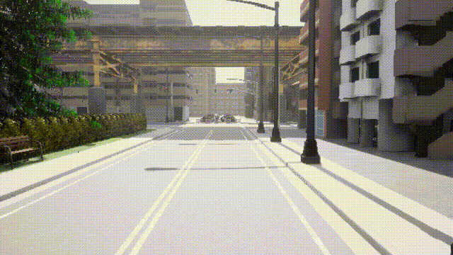
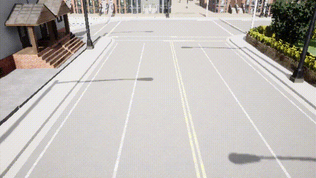
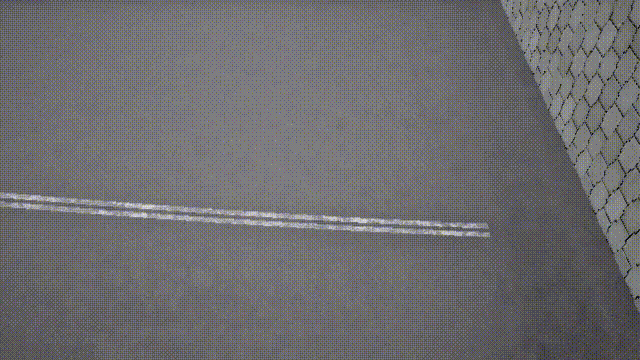
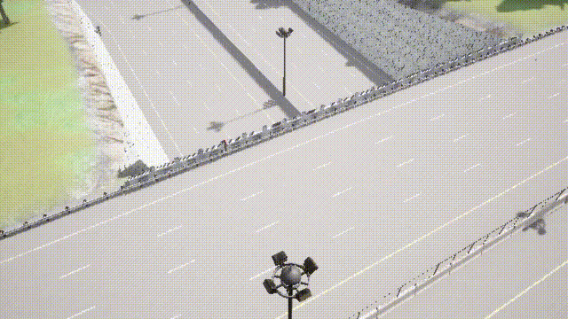
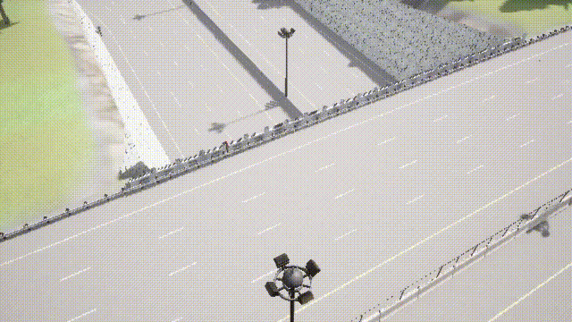

SIGMA = Stream · Inpaint · Geometrically Map Aggregate.
We remove dynamic content before 3D reconstruction.
StaDy4D is the first paired static–dynamic 4D benchmark with 18K clips, 1.9M frames, 9 cameras, diverse urban scenarios, and 4 weather presets.
scroll to explore
0
Video Streams
0
Annotated Frames
0
Camera Configs
0
Urban Scenarios
0
Weather Presets
0
Duration Splits
Click any number to replay the count animation.
01 / Motivation
The 4D Reconstruction Problem
A full 4D scene representation demands a complete 3D model at every moment in time. In real-world data, moving objects and the static background are bundled in every frame; current feed-forward reconstructors process this bundle as-is, producing ghosting artefacts and incomplete geometry.
We introduce StaDy4D, the first large-scale paired static-dynamic 4D dataset, and SIGMA, a streaming pipeline that explicitly isolates moving regions, restores occluded backgrounds, and reconstructs clean static geometry — compatible with any off-the-shelf reconstructor.
02 / Method
SIGMA Pipeline
Three autoregressive stages. Click each to focus.
Dynamic Input
→
→
→
→
Clean (3.5+Δ)D
STAGE 1
Open-Vocabulary Dynamic Segmentation
For each frame \(\mathbf{I}_t\), Grounding DINO localises candidate dynamic objects from a text prompt; SAM 2 turns each box into a pixel-level mask. Per-frame dynamic mask \(\mathbf{M}_t = \bigvee_{j} \mathbf{m}_j\) handles arbitrary categories without task-specific training.
STAGE 2
Occlusion-Aware Background Inpainting
SDXL with an IP-Adapter conditioned on \(\mathbf{I}_t\), \(\mathbf{M}_t\), and the previous inpainted frame \(\hat{\mathbf{I}}_{t-1}\) as a style reference. The IP-Adapter promotes temporally consistent infilling by transferring appearance from the cleaned previous frame.
STAGE 3
Sliding-Window Reconstruction
Feed-forward \(\Phi\) (Pi3 / VGGT) over \(W\) most recent inpainted frames. Global scale recovered via Umeyama Sim(3) chaining on overlapping windows — reducing complexity from \(O(T^2)\) to \(O(T)\) for arbitrarily long sequences.
03 / Dataset
Meet StaDy4D
The first paired Static–Dynamic 4D benchmark. Every scripted trajectory is replayed twice under pixel-identical camera poses, weather, and lighting.
All 9 cameras of a single scenario live in one shared world. The unprojected per-camera point clouds align via ground-truth extrinsics — the side stack shows what each camera sees.
3D world · 9-camera fusion · drag to orbit
Dashcam

Drone

CCTV

Why StaDy4D
Paired Replays
A deterministic simulator replays each scripted scenario twice — once with movers, once without — giving pixel-aligned twin sequences.
9 Camera Configs
Dashcam, drone, building observer, intersection observer, CCTV, pedestrian — narrow, wide, and static baselines.
4 Weather Presets
Clear, Hard Rain, Mid-Rain Sunset, Wet Cloudy — held identical between paired captures.
Cross-Scene Test
Train and test scenarios are geographically disjoint — entirely unseen urban layouts at evaluation.
3 Duration Splits
Short (5s/50f), Mid (10s/100f), Long (30s/300f) — per-clip, multi-view, and streaming regimes respectively.
Pixel-Dense GT
Noiseless metric depth (0–1000 m, 1 cm precision) and per-frame 3D bounding boxes for every actor.
Comparison with Existing Datasets
Dataset
S/D Pair
Dense Depth
Multi-View
Viewpoint Div.
Object Tracks
#Videos
KITTI
—
—
✓
—
✓
61
nuScenes
—
—
✓
✓
✓
1K
Waymo
—
—
✓
—
✓
1.15K
Virtual KITTI
✓
✓
✓
—
✓
50
CARLA
—
✓
✓
✓
✓
N/A
SEED4D
—
✓
✓
—
—
12K
LightCity
—
✓
✓
—
—
>50K imgs
StaDy4D (Ours)
✓
✓
✓
✓
✓
18K
04 / Explore
Interactive Dataset Browser
Pick a scenario & camera archetype. Sliders auto-sweep — drag to take control, or click a tile to expand.
A continuous wall sampled across all 8 scenarios × 6 archetypes × 2 modes. Hover to pause and zoom; click to enlarge.
06 / Results
SIGMA vs Baselines
Baselines (VGGT, Pi3) bake moving vehicles into the reconstruction as ghost trails. SIGMA removes these artefacts, recovering clean road surfaces and façades that closely match ground truth.
Original Frame
Dynamic Mask
Inpainted
SIGMA (Ours)
Ground Truth


—
Static Reconstruction on StaDy4D (ShortVid Test Set)
Method
Pose
Depth
Point Cloud
RRA@30↑
RTA@30↑
AUC↑
Abs Rel↓
δ1.25↑
Acc.↓
Comp.↓
N.C.↑
VGGT
100.0
94.6
85.0
0.163
0.829
4.924
3.551
0.629
Pi3
99.9
93.6
84.7
0.157
0.867
3.885
3.342
0.495
SIGMA
99.9
95.6
88.8
0.090
0.916
3.007
2.326
0.777
Generalisation to Real-World Data
TUM-dynamics (indoor + people) · DTU · ETH3D. Best in bold, second best underlined.
Method
Pose (TUM-dynamics)
Point Cloud (DTU)
Point Cloud (ETH3D)
ATE↓
RPEt↓
RPEr↓
Acc.↓
Comp.↓
N.C.↑
Acc.↓
Comp.↓
N.C.↑
Fast3R
0.090
0.101
1.425
3.340
2.929
0.671
3.340
0.832
0.667
CUT3R
0.047
0.015
0.451
4.742
3.400
0.679
0.617
0.747
0.754
FLARE
0.026
0.013
0.475
2.541
3.174
0.684
0.464
0.664
0.744
VGGT
0.012
0.010
0.311
1.338
1.896
0.676
0.280
0.305
0.853
Pi3
0.014
0.009
0.312
1.198
1.849
0.678
0.194
0.210
0.883
SIGMA
0.016
0.012
0.301
0.836
0.610
0.652
0.217
0.213
0.893
Per-Archetype Reconstruction Accuracy
Camera Archetype
AUC↑
Abs Rel↓
Acc.↓
Dashcam
83.0
0.091
4.145
Drone
86.6
0.054
6.786
Orbit (building)
98.4
0.046
1.418
Orbit (intersection)
99.6
0.196
2.311
CCTV
99.1
0.117
0.779
Pedestrian
77.5
0.124
3.279
All (average)
90.7
0.105
3.120
Interactive 3D Reconstruction
Drag to orbit · scroll to zoom · the moving vehicles have been removed before fusion.
07 / Cite
Citation
@inproceedings{anonymous2026stady4d,
title = {{$\Sigma$}StaDy4D: Towards Complete 4D Static-Dynamic Reconstruction with SIGMA},
author = {Anonymous},
booktitle = {NeurIPS 2026 Datasets and Benchmarks (under review)},
year = {2026}
}